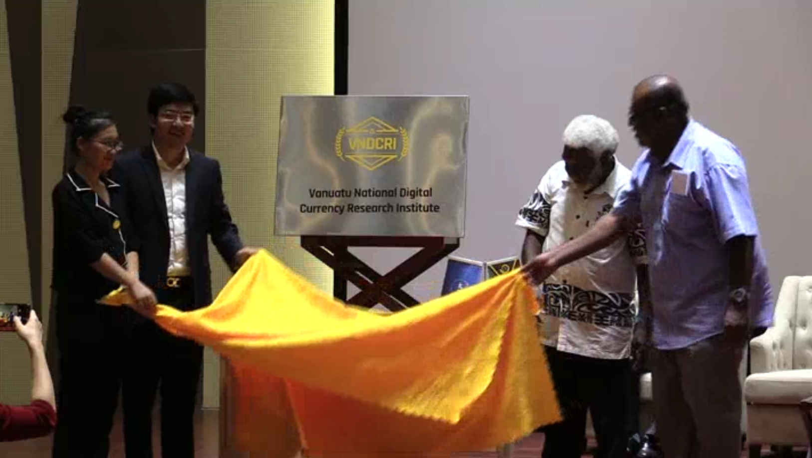
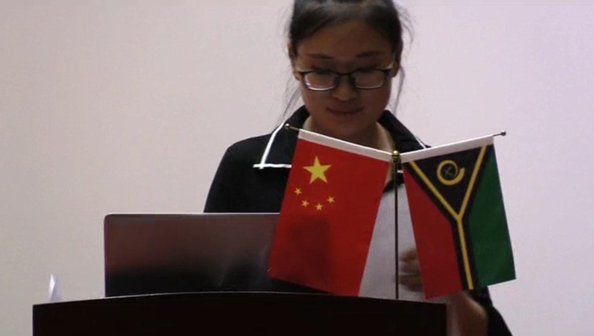
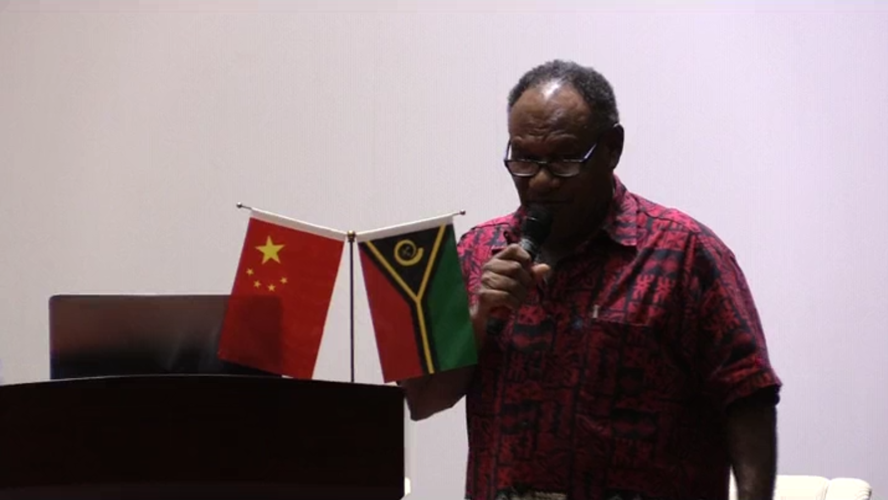

瓦努阿圖數字國家項目
瓦努阿圖數字國家項目是瓦努阿圖政府鼎力支持的一個項目，投資者可通過該項目獲得國家的數字居民權，
同時享有國家數字生態系統的效益。瓦努阿圖數字居民權的持有人不僅可以享有瓦努阿圖普通國民的權益，還可擁有
瓦努阿圖的數字化身份，進而獲得瓦努阿圖政府的在線公共服務，提高政府機構工作效率，同時使投資者日常生活更加便捷。
-
瓦努阿圖
國家數字證券交易所瓦努阿圖
國家數字貨幣研究所作为瓦国的首家交易所，交易所将为投资者提供一个统一的数字证券交易渠道，该交易所将允许符合资质的本土公司及跨国公司在全球范围内募集资金。上市资质及交易规则将由交易所管理委员会制定并发布。
-

瓦努阿圖
離岸數字特區瓦努阿圖
離岸數字特區瓦努阿图国家数字货币研究所专注于法定数字货币技术研究、火山币数字化服务、区块链人才的引进与培训 、区块链创新应用。
-
瓦努阿圖
數字公民千人計劃瓦努阿圖
離岸數字特區为了推动瓦努阿图国家经济的持续增长、推动国家数字化的有效实现，瓦努阿图数字国家项目拟向瓦努阿图政府申请设立离岸数字特区。该离岸数字特区将专设两个子区域，包括高端旅游地产开发新区及数字金融特区。
-
瓦努阿圖
離岸數字特區瓦努阿圖
離岸數字特區“数字公民千人计划”将以瓦努阿图离岸经济自由贸易区为试点开展，旨在借力区块链及加密数字货币的时代机遇，以实现优质人才、技术以及资源的引进，从而促进瓦努阿图的经济和贸易的发展。
數字國家項目通用代幣– 火山幣
瓦努阿圖投資有限公司將擔任火山幣（VC）的發行主體，規劃並管理火山幣從發行到流通的所有過程，火山幣作為瓦努阿圖數字國家項目生態中的流通媒介，有力推動該項目的充分實施。
在瓦努阿圖的塔納島Tanna Island有世界上最親近的活火山——亞蘇爾火山Mount Yasur（也被稱為耶穌火山，因為和Yasur發音相似）耶穌火山的噴發，被形容為上帝燃放的禮花，能夠一睹芳容確是人生之幸！
為了將瓦努阿圖的風土人情和國家名片注入本次項目，我們將把在本次數字國家項目中的通用代幣命名為火山幣（Volcano Coin）。
CNET全球支付系統

瓦努阿圖數字國家計劃現已獲得了瓦努阿圖政府的全面支持，並與瓦努阿圖政府達成了戰略協議。瓦努阿圖國家開發基金會旗下下設多家分支機構，包括瓦努阿圖數字證券交易所，瓦努阿圖國家數字貨幣研究所，未來數字銀行、數字使館、數字企業、數字政府服務等項目也將由基金會協同瓦努阿圖當局聯合開展。
為了提高火山幣的流動性，吸引投資者使用火山幣進行投資、支付與購買活動，瓦努阿圖數字國家項目將啓用CNET全球支付系統，進而確保火山幣的流動性及交易的便捷性。
基金會管理團隊
-
Joe Natuman
瓦努阿圖政治家，前總理（任期：2014-2015），南太平洋大學學士學位，1996至2010年曾相繼任職瓦努阿圖司法部部長，國土能源部部長，教育部部長，內務部長，外交外貿與通訊部部長，聯合國瓦努阿圖國家委員會主席。
-
Maki Simelum
瓦努阿圖政治家，前財政部部長（任期：2013-2015），悉尼科技大學商業與金融碩士，南太平洋大學學士。1992年任瓦努阿圖國家銀行財務經理人，2001年任瓦努阿圖國家銀行資產管理部CEO。2012年成為國家議會成員，2013年3月任司法與社會保障部部長，2013年5月至2015年6月任瓦努阿圖財政部部長。
榮譽顧問
-
Joe Natuman
Tapscott集團的首席執行官，加拿大總督功勳獎的獲得者之一，多倫多大學洛特曼管理學院的客座教授及榮譽校長，Thinkers50排名第二位、全球最優影響力的管理學思想家，已出版《維基經濟學：大規模協作如何改變一切》、 《典範轉移》、 《數字化經濟學》等15本知名著作。
2016年5月，Tapscott先生與其子合作撰寫的《區塊鏈革命：比特幣技術如何改變商業、貨幣與世界》一書出版，2017年，Tapscott先生及其子聯合建立了加拿大區塊鏈研究中心，該中心已囊括了70多個項目，旨在對區塊鏈策略、應用案例、執行上的挑戰與組織轉型進行權威性調查。
專業顧問
-
Rachel Wang
經驗豐富的財富管理專家，專場為國際財富管理和商業策略規劃，10年高淨值客戶跨境資產分配及規劃經驗；加拿大溫莎大學國際會計與金融專業MBA。
-
Robin Guo
Ybcoin和Bitecoin.com的聯合創始人，亞洲區塊鏈資產與金融協會的創世成員，亞洲區塊鏈基金會董事總經理。區塊鏈資產保險、加密數字貨幣交易所運營較早的採納者與參與者；澳大利亞迪肯大學商學會計與金融方向學士。
-
Garry Wong
CFA證書持有人，豐富的CFO與公司財務主管，20年財務管理與跨境並購交易經驗。加拿大約克大學金融MBA，香港大學工商管理市場方向學士。前美國與加拿大雙上市公司CFO，現任全球風投公司財務副總裁。
-

Jelena Strelnikova
拉脫維亞大學法律碩士學位，柏林洪堡大學歐洲法律學士學位，中國政法大學留學經歷。研究方向覆蓋互聯網法律，國際數字貨幣及區塊鏈技術與合規的法律問題。
現場視頻
- 
- 
- 
除項目白皮書所明確載明的內容之外，瓦努阿圖投資有限公司不對火山幣作任何陳述和保證（尤其是對其適銷性和特定功能）。任何人對火山幣的購買行為均基於其自身對火山幣的理解及本白皮書所披露的信息。在無損於前述內容普適性的前提下，所有參與者均將在火山幣啓動後將按現狀接受火山幣，與其技術規格、參數、性能及功能無關。
VOLCANO COIN
©Vcoin copyright